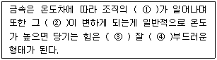
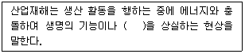

자동차차체수리기능사 (2013-04-14 기출문제)
1과목: 자동차공학
1. 자동차를 용도 및 형상에 따라 분류할 때 상자형에 속하지 않는 것은?
- 세단
- 쿠페
- 리무진
- 컨버터블
(정답률: 86%)

2. 엔진에서 발생하는 밸브의 서징현상을 방지하기 위한 방법이 아닌 것은?
- 스프링의 고유 진동수를 높인다.
- 피치가 서로 다른 2중 스프링을 사용한다.
- 원추형 스프링의 사용을 피한다.
- 부등 피치 스프링을 사용한다.
(정답률: 68%)
3. 다음 중 자동차의 차륜 정렬 요소와 관계가 없는 것은?
- 토인
- 캐스터
- 터빈
- 캠버
(정답률: 90%)
4. 자동차 현가장치에서 쇽업쇼버가 상하 진동을 흡수하는데 가장 관계가 깊은 힘은?
- 감쇠력
- 원심력
- 구동력
- 전단력
(정답률: 87%)
5. 판 스프링에서 스프링의 진동을 빠르게 감쇠시킬 수 있게 하는 것은?
- 닙(Nip)
- 스팬(Span)
- 판간마찰(Interleaf Friction)
- 스프링 아이(Spring Eye)
(정답률: 69%)
6. 다음 중 차체 밑부분에 설치된 플로어패널(floor panel)의 기능과 가장 거리가 먼 것은?
- 소물류의 수납기능
- 차량 외부로부터의 물, 먼지 등의 유입차단
- 하체부에 설치된 연료장치계의 보호
- 충돌 등 외력으로부터의 승객보호
(정답률: 86%)
7. 다음 중 자동차용 축전지에 대해서 바르게 설명된 것은?
- 축전지 내의 각 셀은 병렬로 접속되어 있다.
- 축전지 내의 극판수가 많을수록 축전지 용량은 크게 할 수 있다.
- 격리판은 도체이며 전해액이 이동될 수 없도록 격리할 수 있어야 한다.
- 표준 충전 전류는 보편적으로 축전지 용량의 20% 정도가 적당하다.
(정답률: 68%)
8. 단체구조(unit construction)또는 모노코크 바디(monocoque body)의 특징이 아닌 것은?
- 차체의 경량화에 유리하다.
- 외력을 차체 전체에 분산시키는 구조이다.
- 트럭 등 주로 중차량에 적용되고 있다.
- 박판 구조이므로 점용접이 가능하다.
(정답률: 81%)
9. 다음 중 물체의 부피를 표시하는 단위가 아닌 것은?
- ℓ
- cm3
- cc
- Ω
(정답률: 92%)
10. 시스템 내의 동작물질이 한 상태에서 다른 상태로 변화 하는 것은?
- 상태변화
- 경로
- 가역과정
- 이상과정
(정답률: 91%)
11. 도면에서 NS로 표시되는 것은 무엇을 뜻하는가?
- 도면의 나이
- 배척
- 비례척이 아닌 것을 표시
- 축척
(정답률: 72%)
12. 열처리 방법 중에서 저온 뜨임을 할 때의 적정온도는?
- 상온
- 150℃
- 500℃
- 600℃
(정답률: 75%)
13. 탄산가스 아크용접에 사용하는 솔리드 와이어의 지름1.2[mm]에 알맞은 전류 범위는?
- 30~80[A]
- 50~120[A]
- 70~180[A]
- 80~350[A]
(정답률: 50%)
14. 열경화성 수지에 해당되지 않는 것은?
- 폴리에틸렌 수지
- 페놀 수지
- 멜라민 수지
- 규소 수지
(정답률: 52%)
15. 알루미늄 + 구리 + 마그네슘 + 망간의 합금으로, 비중에 비하여 강도가 크므로 무게를 가볍게 해야 하는 항공기나 자동차 재료로 활용되는 것은?
- 주철합금
- 황동
- 두랄루민
- 알루미늄
(정답률: 82%)
16. 용접전압의 설명으로 맞지 않는 것은?
- 아크 길이를 결정하는 변수이다.
- 적정 아크 길이는 심선 지름과 대략 같은 정도가 좋다.
- 아크 길이가 길면 용융금속의 산화, 질화가 쉽다.
- 철분계 용접봉은 아크길이 조정이 필요하다.
(정답률: 53%)
17. 전기저항 용접할 때 발생 열량으로 알맞은 식은? [단, H(Cal), R(Ω), t(sec)]
- H=(0.24)2IRt
- H=0.24I2Rt
- H=0.24IR2t
- H=0.24IRt2
(정답률: 71%)
18. M30 X 8로 표시된 나사에서 30은 무엇을 나타낸 것인가?
- 호칭지름
- 골지름
- 인장강도
- 나사 피치
(정답률: 72%)
19. 연삭숫돌의 외형을 수정하여 규격에 맞도록 하는 것은?
- 트루잉(truing)
- 드레싱(dressing)
- 글레이징(glazing)
- 자생작용
(정답률: 59%)
20. 납의 성질을 잘못 설명한 것은?
- 전성이 크고 연하다.
- 인체에 유독한 금속이다.
- 공기나 물에는 거의 부식되지 않는다.
- 내알칼리성이다.
(정답률: 74%)
2과목: 자동차차체정비
21. ( )속에 들어갈 단어를 바르게 나열한 것은?

- 변화 - 성질 - 적으나 - 늘어나서
- 파괴 - 조직 - 크나 - 부풀어
- 융화 - 모양 - 올라가나 - 늘어나서
- 괴리 - 조직 - 상승되나 - 일어나
(정답률: 89%)
22. 주철을 설명한 내용으로 가장 거리가 먼 것은?
- 유동성이 좋다.
- 압축강도는 크나 인장 강도가 부족하다.
- 녹이 잘 생기고, 내마모성이 작다.
- 마찰저항이 크고, 값이 싸다.
(정답률: 64%)
23. 아르곤(Ar) 또는 헬륨(He) 등의 가스로 아크 및 용접부를 둘러싸게 하여 용접부를 대기중의 산소, 질소의 차단하면서 용접하는 용접은?
- 플라즈마 용접
- 탄산가스 아크 용접
- 인버터 용접
- 불활성 가스 아크 용접
(정답률: 77%)
24. 자동차용 차체 재료로 사용되는 알루미늄 재료의 특성과 관계없는 것은?
- 비중이 작고 용융점이 낮다.
- 전연성이 좋다.
- 열전도성, 전기전도성이 좋다.
- 표면에 산화막이 형성되지 않아 내식성이 떨어진다.
(정답률: 84%)
25. 리어 스포일러 재료의 특징으로 거리가 먼 것은?
- 경질의 재료로서 PVC, PUR 등이 사용된다.
- 경질의 재료로서 두께, 형 빼기 방향에 주의한다.
- 경질 재료의 강성 확보를 위해 인서트재를 삽입하고 한다.
- 방수성이 확보되어야 하며 인서트재의 방청에 주의 하여야 한다.
(정답률: 61%)
26. 패널에 구멍을 뚫고 구멍 주위를 계속 용접하여 용접살이 찰 때까지 용접을 하는 방법은?
- 플라즈마 용접
- 플러그 용접
- 프로젝션 용접
- 스포트 용접
(정답률: 62%)
27. 모노코크 바디의 프레임 센터링 게이지 부착방법이 아닌 것은?
- 안쪽에 거는 방법
- 바깥쪽 아랫부분에 거는 방법
- 바깥쪽 윗부분에 거는 방법
- 아래쪽 부착방법(마그네트 사용)
(정답률: 57%)
28. 프레임을 바닥면에 묻고 유압잭과 체인, 앵커 등을 조합하여 사용할 수 있는 형식의 프레임 수정기는?
- 이동식 프레임 수정기
- 고정식 랙형 프레임 수정기
- 바닥식 묻힘 베이스 프레임 수정기
- 바닥식 간이형 프레임 수정기
(정답률: 80%)
29. 도료를 도장하는 물체에 칠하고, 건조시킬 때의 건조방법이 아닌 것은?
- 냉간건조
- 휘발건조
- 산화건조
- 중합건조
(정답률: 64%)
30. 분체도장법 중에서 일반적으로 가장 많이 사용하는 방법은?
- 용사법
- 데스파존법
- 유동 침적법
- 정전 분무도장법
(정답률: 72%)
31. 에어공구 중 용접된 철판을 두 개로 분리하는데 사용하는 공구로 가장 적합한 것은?
- 에어 가위(쉐어)
- 에어 정(치즐)
- 에어 톱(쏘우)
- 에어 그라인더
(정답률: 62%)
32. 충돌사고로 파손된 프레임 교정 작업에 대한 설명으로 맞는 것은?
- 충격력에 반대로 복원력을 가하지 않는다.
- 힘을 받는 곳부터 먼저 수정 복원을 한다.
- 인장작업은 바디구조에 대해 수평, 직각 방향으로 행한다.
- 수정 인장작업은 두 곳 이상의 힘을 합쳐 수정 작업을 하면 안된다.
(정답률: 56%)
33. 패널교환을 할 때 열 변형 없이 정확한 절단을 하고자 한다. 가장 옳은 것은?
- 산소, 아세틸렌가스
- 가스 가우징
- 에어 톱
- 플라즈마 절단기
(정답률: 72%)
34. 트램 트랙킹 게이지로 측정하는 곳이 아닌 것은?
- 바디의 대각선 측정
- 프레임의 일그러진 상태 점검
- 프론트 사이드 멤버의 좌우로 휨 상태 점검
- 프레임의 센터라인 측정
(정답률: 58%)
35. 프레임 기준선에 의해 프레임 각부 높이의 이상 상태를 점검 및 측정하는데 기준이 되는 것은?
- 데이텀 라인
- 레벨
- 센터라인
- 단차
(정답률: 70%)
36. 유압 바디 잭 사용 시 주의 사항으로 틀린 것은?
- 램에 무리한 힘을 가하지 말 것
- 램 플런저가 늘어나면 유압을 상승시킬 것
- 나사부분을 보호할 것
- 호스 취급에 유의할 것
(정답률: 84%)
37. 프레임의 파손 및 변형의 원인으로 옳지 않은 것은?
- 극단적인 휨 모멘트의 발생
- 충돌이나 전복사고발생
- 자연으로 인한 부식발생
- 부분적인 집중하중으로 인한 발생
(정답률: 87%)
38. 판금가공에 관한 것 중 성형가공에 속하는 것은?
- 전단
- 펀칭
- 블랭킹
- 벌징
(정답률: 53%)
39. 다음 중 승용차 프론트 바디의 구성품이 아닌 것은?
- 플로워 패널
- 앞 펜더 에이프런
- 앞 사이드 프레임
- 라디에이터서포트 패널
(정답률: 72%)
40. 퍼티면에 작은 요철이나 변형을 연마하는데 적합하며 특히 라인 만들기에 적합한 연마기는?
- 기어액션 샌더
- 더블액션 샌더
- 오비탈 샌더
- 스트레이트 라인 샌더
(정답률: 69%)
3과목: 안전관리
41. 차체 부품을 제작하고자 할 때의 설명으로 틀린것은?
- 차체부품 제작할 부위의 치수를 먼저 확보한다.
- 작업대 위에 놓고 절단된 연강판을 올려놓고 굽힙선을 긋는다.
- 구부림 성형 작업시 중앙부터 구부리고 양끝을 나중에 한다.
- 한 번에 완전히 성형하지 말고 여러번 나누어서 성형하여 완성한다.
(정답률: 76%)
42. 바디 수리에 사용되는 용제의 설명 중에서 잘못된 것은?
- 교환하는 패널의 접촉부위는 반드시 재 씰링을 한다.
- 씰러는 방수와 불순물, 배기가스의 실내 진입을 차단한다.
- 수리하는 패널에 틈새가 발생하면 언더코팅을 많이 도포한다.
- 외부 패널의 내부 표면에는 부식 방지 컴파운드를 도포한다.
(정답률: 76%)
43. 자동차 구조에 대한 설명 중 잘못된 것은?
- 자동차는 엔진, 새시, 보디, 전장품 등에 의해 구성된다.
- 새시는 보디와 주행에 필요한 모든 장치를 포함한다.
- 독립된 프레임이 없는 자동차의 무게와 힘은 보디가 지지한다.
- 자동차 골격이라 할 수 있는 기본 틀을 프레임이라 한다.
(정답률: 72%)
44. 도료의 성분에 들지 않는 것은?
- 도막
- 수지
- 안료
- 용제
(정답률: 67%)
45. 승용차 바디 중앙부분의 손상진단을 하고자 할때 중앙바디 점검에 속하지 않는 것은?
- 프론트 필러 상하가 붙어있는 부분의 근처 점검
- 센터 필러 상하 부착부분의 점검부분
- 사이드실의 변형 유무 점검
- 프론트 사이드 멤버와 좌우 사이드 멤버가 붙어있는 부근의 점검
(정답률: 50%)
46. 스프링 백의 현상 중 틀린 것은?
- 경도가 높을수록 커진다.
- 같은 판재에서 구부림 반지름이 같을 때에는 두께가 얇을수록 커진다.
- 같은 두께의 판재에서는 구부림 반지름이 작을 수록 크다.
- 같은 두께의 판재에서는 구부림 각도가 예리할수록 크다.
(정답률: 57%)
47. 트럭의 보강판 부착에 대한 일반적 주의사항에서 주로 사용되지 않는 보강재의 판 두께는?
- 3mm
- 4.5mm
- 6mm
- 7mm
(정답률: 55%)
48. 바디프레임 수정기를 사용하여 수리를 할 때 차체를 붙잡을 수 있는 부속기기를 무엇이라 하는가?
- 클램프
- 잭
- 훅
- 유압램
(정답률: 82%)
49. 최종 상도 도막을 연마하여 광택을 내는 연마기는?
- 싱글액션샌더
- 오비털샌더
- 더블액션샌더
- 폴리셔
(정답률: 69%)
50. 움푹 패인 부분을 메우는 능력으로 차례대로 나열한 것은?
- 판금퍼티-중간타입-래커퍼티-폴리퍼티
- 판금퍼티-중간타입-폴리퍼티-래커퍼티
- 래커퍼티-판금퍼티-중간타입-폴리퍼티
- 폴리퍼티-판금퍼티-중간타입-래커퍼티
(정답률: 69%)
51. 이동식 및 휴대용 전동기기의 안전한 작업방법으로 틀린 것은?
- 전동기의 코드선은 접지선이 설치된 것을 사용한다.
- 회로시험기로 절연상태를 점검한다.
- 감전방지용 누전차단기를 접속하고 동작 상태를 점검한다.
- 감전사고 위험이 높은 곳에서는 1중 절연구조의 전기기기를 사용한다.
(정답률: 78%)
52. ( )에 알맞은 말은?

- 작업상 업무
- 작업조건
- 노동 능력
- 노동 환경
(정답률: 82%)
53. 기관 분해조립 시 스패너 사용 자세 중 옳지 않은 것은?
- 몸의 중심을 유지하게 한손은 작업물을 지지한다.
- 스패너 자루에 파이프를 끼우고 발로 민다.
- 너트에 스패너를 깊이 물리고 조금씩 앞으로 당기는 식이로 풀고, 조인다.
- 몸은 항상 균형을 잡아 넘어지는 것을 방지한다.
(정답률: 89%)
54. 연삭 작업시 안전사항 중 틀린 것은?
- 나무 해머로 연삭 숫돌을 가볍게 두둘겨 맑은 음이 나면 정상이다.
- 연삭 숫돌의 표면이 심하게 변형된 것은 반드시 수정한다.
- 받침대는 숫돌차의 중심선보다 낮게 한다.
- 연삭 숫돌과 받침대와의 간격은 3mm 이내로 유지한다.
(정답률: 66%)
55. 화재의 분류 중 B급 화재 물질로 옳은 것은?
- 종이
- 휘발유
- 목재
- 석탄
(정답률: 81%)
56. 차체에 장착된 부품을 취급할 때의 사항으로 적절하지 않은 것은?
- 내장트림이나 시트류는 고정위치를 확인해 가면서 조심스럽게 떼어낸다.
- 필요범위보다 조금 넓게 해주면 나중 작업이 편리하다.
- 인스트루먼트 판넬은 부분 부품으로 하나하나 탈착한다.
- 접착식 몰딩은 열을 가하면 깨끗하게 붙여지고 떼어지기도 한다.
(정답률: 43%)
57. 차체수리에 필요한 안전 보호구와 가장 관련이 없는 것은?
- 헬멧
- 귀마개
- 페이스 커버
- 내용제성 장갑
(정답률: 65%)
58. 다음 전기 저항용접 중 맞대기 용접에 해당하는 것은?
- 점 용접
- 시임 용접
- 프로잭션 용접
- 플래시 용접
(정답률: 44%)
59. 차체수정 작업에 앞서 계측 작업을 정밀하게 하기 위해서는 다음의 사항들을 주의해야 한다. 관련이 적은 것은?
- 게이지를 수평으로 확실히 고정한다.
- 게이지를 수직으로 확실히 고정한다.
- 계측기기의 손상이 없어야 한다.
- 객관적인 기준이 되는 차체치수도를 활용한다.
(정답률: 64%)
60. 작업 중 정전되었을 때 해야 할 일과 관계가 없는 것은?
- 절삭 공구는 가공물에서 떼어 낸다.
- 경우에 따라서는 메인 스위치도 내린다.
- 주위의 공구를 정리한다.
- 기계의 스위치를 내린다.
(정답률: 81%)